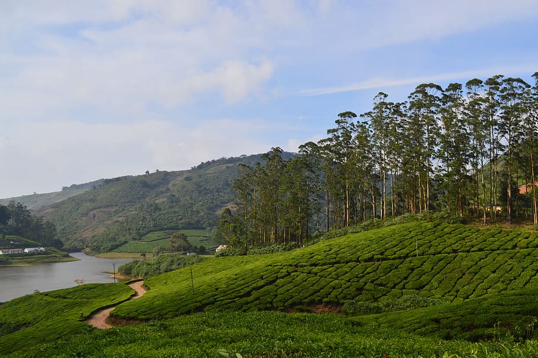

Meghamalai
Also known as the "High Wavy Mountains," Meghamalai is a picturesque hill station with stunning landscapes, tea plantations, and misty mountains. The place is known for its pleasant weather and is an ideal spot for nature lovers and trekkers.

Kumbakkarai Falls
Located about 8 km from Theni, Kumbakkarai Falls is a serene waterfall surrounded by lush greenery. It is a great place to relax and enjoy a refreshing dip in the cool waters.

Vaigai Dam
Situated on the Vaigai River, the Vaigai Dam is a popular picnic spot offering scenic views of the surrounding mountains and the reservoir. Boating facilities are available here.

Suruli Falls
About 56 km from Theni, Suruli Falls is another beautiful waterfall amidst dense forests. The falls are believed to have medicinal properties and are surrounded by numerous caves and temples.

Thekkady
Though not within Theni district, Thekkady in neighboring Kerala is easily accessible from Theni and offers opportunities for wildlife enthusiasts to explore the Periyar Wildlife Sanctuary. The sanctuary is known for its diverse flora and fauna and offers activities like jungle safaris and boat cruises.
.jpg)
Sothuparai Dam
Located near Periyakulam in Theni district, Sothuparai Dam is a serene place to visit and offers mesmerizing views of the surrounding hills and valleys.

Bodi Mettu
Bodi Mettu is a beautiful viewpoint in the Western Ghats that offers breathtaking panoramic views of the mountains and valleys below.
.jpg)